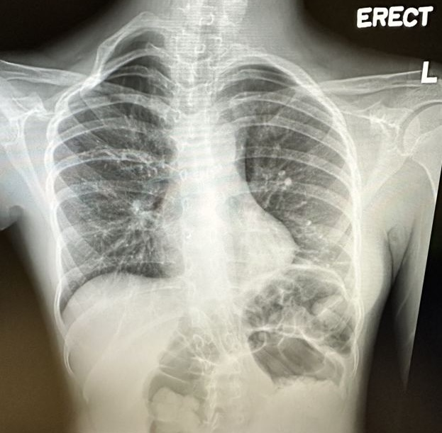
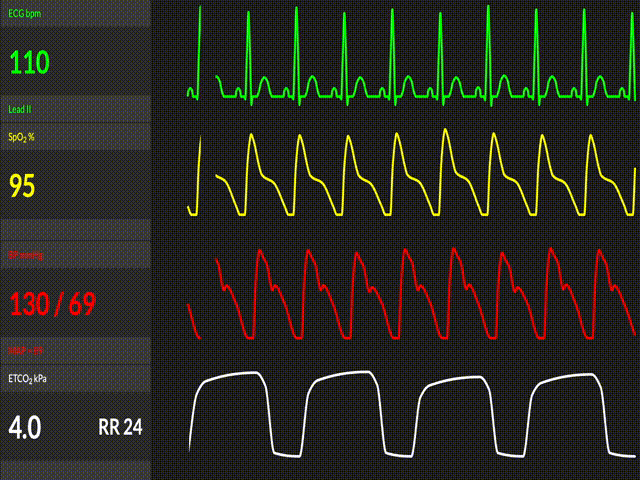
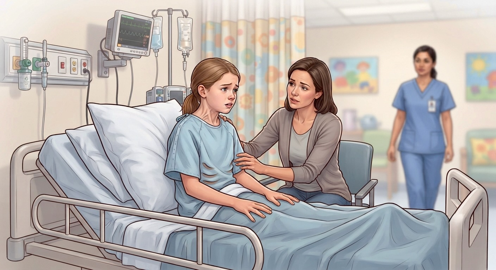

You are working holiday duty today and you receive a call from the paediatric ward for holiday chest physiotherapy — a case of Maya, a 10-year-old girl admitted yesterday with an RSV infection and an acute asthmatic attack.
Dx: RSV infection, asthmatic attack
Admission Note
Birth History
FT NSD, born at PWH, BW 3.2 kg
AN, PN uneventful
PMHx
Vaccination up-to-date
Normal development
Hx of admission: 4y2m: parainfluenza (paraflu) infection with asthmatic attack 6y: RSV infection with asthmatic attack 8y: EV/RV infection
No prior ICU admissions, intubations, or continuous nebulizer requirements
No confirmed food or environmental allergies
Environmental triggers: no indoor smokers (father smokes outdoors only) no pets at home no incense burning bed sheets changed weekly
SHx
Lives with parents and a younger brother (3y)
Main carer: mother (housewife); father works as a driver
Studying P5 in a mainstream primary school
HPI
'E' Adm yesterday. On/off fever x 5/7 w/ cough, running nose Seen by GP with symptomatic medications. Fever still on/off, with worsening SOB, malaise, and decreased appetite, hence attended AED.
TOCC
Mother and younger brother both with +ve URTI symptoms.
Investigations
NPS: RSV +ve Hb: 13.0 WBC: 14.0 CRP: 25

Erect CXR on admission
Management
Blood x CBC, LRFT, CRP, C/ST urine multi-stix sputum x C/ST, mycoplasma
PO Panadol 450mg Q4H prn (fever); PO Brufen 200mg Q6H prn (fever >39°C) PO Flumicil 100mg TDS prn PO Actifed 5ml TDS prn ---------------------------
Continuous SpO2 monitoring; inform if desaturation / increased SOB
AM Round — Dr Notes
Case of RSV infection, asthmatic attack
Noted desat from 91% 2L O2 NC, tachycardia 130-140, RR 30-32 last night ~1am.
Step up O2 to HFNC FiO2 0.3, FR 30L/min
Now on Ventolin 6 puff Q2H, added PO prednisolone.
Mx: keep current HFNC settings, holiday chest physio.
---------------------------
Vitals on Physio Visit (1000)

On Arrival
Maya's mother is sitting next to her bed
Maya is propping up, refusing to lie down; she can speak only in short phrases
Moderate subcostal and intercostal retractions; her neck muscles are visibly working to pull in air

You arrive at Maya's bedside for the holiday chest physio review.
1 What investigation / PE would you like to perform?
Tap an option to reveal the finding, then proceed to management.
2 Select all management options you would like to provide:
📊 Final Score & Response Chart
Your total score
Q
Option
Indicated?
Your Selection
🧪 Key Points
A normal/pseudonormal PCO2 in a severely distressed asthmatic child is a red flag, not a reassurance — early hyperventilation blows off PCO2, so a rising PCO2 back toward "normal" alongside ongoing severe accessory muscle use signals fatigue and impending respiratory failure requiring urgent PICU consult.
A sudden drop in wheezing with worsening distress can signal a "silent chest" — airflow is so reduced that no wheeze can be generated — a pre-terminal emergency easily mistaken for improvement. This differs from atelectasis (mucus-plug lung collapse), where breath sounds are absent only over the affected segment while the rest of the chest still wheezes.
Percussion, vibration, and suction are contraindicated in acute severe asthma — they provoke reactive bronchospasm, risk laryngospasm/hypoxia, and the associated distress raises oxygen demand. Physical secretion-clearance techniques are only considered later, once bronchospasm has resolved.
Forward-leaning positioning reduces work of breathing by optimising accessory muscle mechanics, maximising diaphragmatic excursion, improving V/Q matching, and minimising air trapping and panic.
Breathing exercises (e.g. pursed-lip breathing) aim to counter dynamic hyperinflation and slow respiratory rate, but should be introduced during the recovery phase — once the child is clinically improving — rather than in the acute distressed phase.
Explanation of each option
Reference: Kaş Alay, G., & Yıldız, S. (2024). Comparison of Forward-Leaning and Fowler Position: Effects on Vital Signs, Pain, and Anxiety Scores in Children With Asthma Exacerbations. Respiratory Care, 69(8), 968–974.